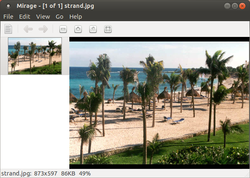

Mirage
Dieser Artikel wurde für die folgenden Ubuntu-Versionen getestet:
Ubuntu 17.10 Artful Aardvark
Ubuntu 16.04 Xenial Xerus
Ubuntu 14.04 Trusty Tahr
Zum Verständnis dieses Artikels sind folgende Seiten hilfreich:
Mirage  ist ein kleiner und sehr schneller Bildbetrachter, basierend auf der Grafikbibliothek GTK+. Daher ist er z.B. für die Desktop-Umgebungen GNOME, Xfce und LXDE gut geeignet. Da Bilder innerhalb eines Ordners vorgeladen werden, erfolgt der Bildwechsel verzögerungsfrei. Man kann das Programm als ernsthaften Konkurrenten zu Eye of GNOME, dem Standard-Bildbetrachter von GNOME, bezeichnen.
ist ein kleiner und sehr schneller Bildbetrachter, basierend auf der Grafikbibliothek GTK+. Daher ist er z.B. für die Desktop-Umgebungen GNOME, Xfce und LXDE gut geeignet. Da Bilder innerhalb eines Ordners vorgeladen werden, erfolgt der Bildwechsel verzögerungsfrei. Man kann das Programm als ernsthaften Konkurrenten zu Eye of GNOME, dem Standard-Bildbetrachter von GNOME, bezeichnen.
Neben den üblichen Zoom-Funktionen beherrscht Mirage auch Diashows und ist über die Kommandozeile steuerbar. Zudem kann man einfache Bearbeitungsfunktionen nutzen, wie etwa Bilder verkleinern/vergrößern, spiegeln, beschneiden und freistellen.
Im Prinzip dient Mirage also auch als Bildbearbeitung für die wichtigsten Funktionen. Für das schnelle Betrachten von Bildern stellt Mirage eine Alternative zu den umfangreicheren Programmen wie Shotwell, F-Spot oder gThumb dar. Eine Druckfunktion ist allerdings nicht enthalten, kann aber einfach nachgerüstet werden (siehe unten).
Installation¶
 Mirage ist in den offiziellen Paketquellen von Ubuntu enthalten. Es muss also lediglich das gleichnamige Paket installiert [1] werden:
Mirage ist in den offiziellen Paketquellen von Ubuntu enthalten. Es muss also lediglich das gleichnamige Paket installiert [1] werden:
mirage (universe)
 mit apturl
mit apturl
Paketliste zum Kopieren:
sudo apt-get install mirage
sudo aptitude install mirage
Benutzung¶
 Die grundlegende Funktionsweise eines Bildbetrachtungsprogrammes ist selbsterklärend. Deshalb folgen an dieser Stelle nur kleine Tipps, die die Benutzung erleichtern sollen bzw. Mirage erst richtig interessant machen.
Alle Bilder im Verzeichnis durchsehen¶
Man kann im Menü unter "Datei -> Verzeichnis öffnen..." alle Bilder des gewählten Verzeichnisses laden und mit den Pfeilen ("Voriges/"Nächstes") oder per Mausrad sichten.
Beim Laden eines einzelnen Bildes per Menü oder aus einem Dateimanager ist dies standardmäßig deaktiviert. Abhilfe schafft das Aktivieren der Checkbox unter "Bearbeiten -> Einstellungen -> Verhalten -> Alle Bilder im aktuellen Verzeichnis laden".
Benutzerdefinierte Aktionen¶
Mirage zeichnet sich durch die Erweiterbarkeit mit selbstdefinierten Funktionen aus, vergleichbar mit den Nautilus-Actions. Man kann ihnen sogar eine eigene Tastenkombination zuweisen, so dass man aus der Anwendung heraus weitere Aktionen initiieren oder Programme starten kann. Die Aktionen sind über das Menü aufrufbar unter "Bearbeiten -> Benutzerdefinierte Aktionen", unter "Konfigurieren" kann man sie verwalten. Voreingestellt sind folgende Aktionen:
| Benutzerdefinierte Aktionen | ||
| Aktion | Funktion | Tastenkürzel (Shortcut) |
| "Open in GIMP" | Öffnet die Datei in der Bildbearbeitungssoftware GIMP | Strg + E |
| "Create Thumbnail" | Erzeugt ein Vorschaubild der aktuellen Datei in einer Größe von 150x150 Pixeln und speichert esals .jpg im selben Verzeichnis wie das Originalbild ab. Bei dieser Aktion kommt eine Funktion von ImageMagick zum Einsatz, dieses Programm muss also bei Bedarf nachinstalliert werden. | Alt + T |
| "Create Thumbnails" | Analog zur Erstellung einzelner Vorschaubilder erzeugt diese Aktion per Stapelverarbeitung welche für alle Dateien im aktuellen Verzeichnis. | Strg + Alt + T |
| "Move to Favorites" | Verschiebt die Datei nach ~/mirage-favs. Dies kann man nutzen, um z.B. Bilder einem Ordner zuzuweisen, aus dem das Hintergrundbild ausgewählt wird oder um Bilder zu sichten und gleichzeitig aus der selben Anwendung heraus zu sortieren. | Strg + Alt + F |
Die Aktionen kann man dem eigenen Vorlieben entsprechend beliebig anpassen. Hierzu bedient man sich Shell-Befehlen und -Programmen, die sich hier auch außerhalb des Terminals nutzen lassen. Siehe auch Shell/Befehlsübersicht und das kommandozeilenbasierte Bildbearbeitungsprogramm ImageMagick.
Eine einfache Druckfunktion für das aktuell geladene Bild wäre z.B.:
lp -s -d DRUCKERNAME -o media=a4 %F
Mit der Tastenkombination
Strg +
P wird das angezeigte Bild dann direkt aus Mirage heraus ausgedruckt. DRUCKERNAME muss natürlich durch einen installierten Drucker ersetzt werden. Weitere Optionen findet man mit dem Befehl:
man lp
Bildateien mit Mirage verknüpfen¶
Damit Bilder eines Dateityps immer mit Mirage geöffnet werden, muss man im jeweils verwendeten Dateimanager die entsprechenden Verknüpfungen setzen:
Unity/GNOME: Nautilus
Xfce: Thunar
LXDE: PCMan File Manager
Problembehebung¶
Programmoberfläche auf Englisch¶
Falls die Programmoberfläche trotz deutscher Spracheinstellungen nur auf Englisch erscheint (854165), hilft folgender Workaround:
sudo mkdir -p /usr/local/share/locale/de/LC_MESSAGES sudo cp /usr/share/locale/de/LC_MESSAGES/mirage.mo /usr/local/share/locale/de/LC_MESSAGES/mirage.mo
Anschließend das Programm neu starten.
Deutsche Sprachdatei¶
Da die mitgelieferte deutschsprachige Übersetzung nur lückenhaft umgesetzt ist, gibt es eine verbesserte Sprachdatei für die deutsche Sprache. Man kann die Datei /usr/local/share/locale/de/LC_MESSAGES/mirage.mo mit Root-Rechten mit der hier erhältlichen mirage.mo  ersetzen. Anschließend Mirage neu starten, und die Oberfläche erscheint durchgängig in deutscher Sprache.
ersetzen. Anschließend Mirage neu starten, und die Oberfläche erscheint durchgängig in deutscher Sprache.
 Übersichtsartikel
Übersichtsartikel- Erstellt mit Inyoka
-
 2004 – 2017 ubuntuusers.de • Einige Rechte vorbehalten
2004 – 2017 ubuntuusers.de • Einige Rechte vorbehalten
Lizenz • Kontakt • Datenschutz • Impressum • Serverstatus -
Serverhousing gespendet von